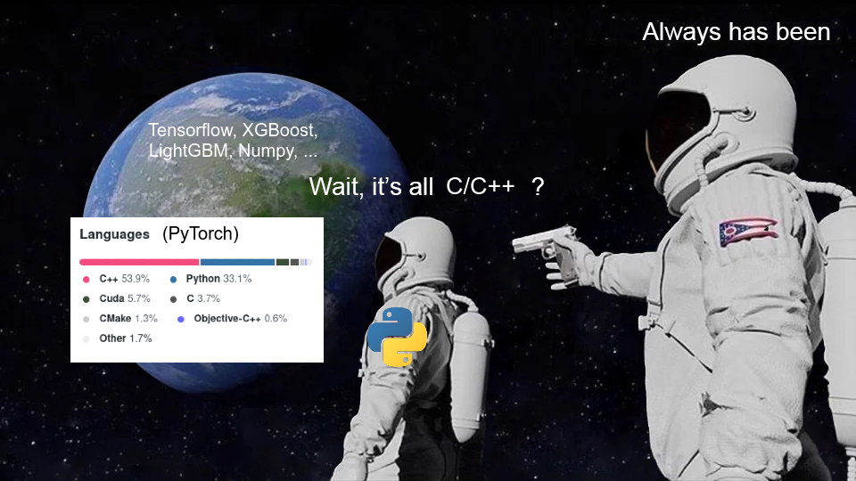
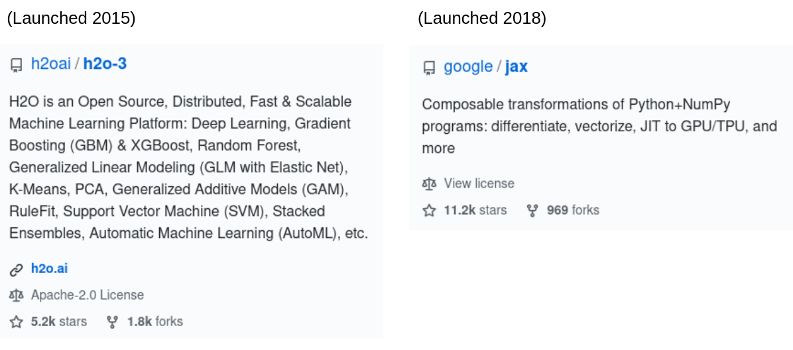

2021-02-02
The Uncanny Dominance of the Python ML Ecosystem
I don't often stay up puzzling over the popularity of programming languages, but recently I went down a bit of a rabbit hole pondering the popularity of Python in Machine Learning applications. Why has Python become the dominant language of Machine Learning? Why haven't we all moved to a faster, more easily deployable language by now? What might it take to unseat Python?
Intro: An Old Kaggle Thread
Five years ago, as I was wading into the metaphorical kiddie pool of data science, I started a thread on Kaggle titled "Newbie about to do something stupid: Considering F# over Python/R as a learning experience." I was considering F# (the .NET functional programming language) over the even-then-typical route of R or Python because I was growing fascinated with functional programming while interning at a .NET-heavy company. Much of my interest was driven by a book my boss had given me titled Machine Learning Projects for .NET Developers, which showed off how functional programming could enable elegant implementations of several popular ML algorithms. To my joyful surprise, Mathias Brandewinder, the author of this book himself, replied to my thread with some excellent points. I'll excerpt the relevant ones here:
- Beyond machine learning, in general, learning to program in a functional style is a good investment...
- ... I would also recommend looking into other languages. The obvious benefits of Python and R are a larger community, especially for ML/data science, and a wealth of packages / ready-to-use libraries... Then again, the [F#] community is awesome and very supportive.
- Using a statically typed language, which runs on .NET, like F# has benefits. It is fast out of the box, easy to distribute... can be run on GPUs... will integrate very nicely in a solution that runs in production...
I think this is great advice even today -- way to stand the test of time, Mathias! Familiarity with many programming styles will always have value, it's hard to beat big ecosystems, and a fast, easy-to-deploy, statically-typed languages like F# do offer a lot of benefits which Python sorely lacks even today.
Now, what did I personally do with this advice back in 2015? Well, after my internship wrapped up, I spent some time with Octave (the open source equivalent to Matlab) by way of Andrew Ng's famous Coursera course, and subsequently I dove pandas-first into the Python ecosystem, where I have stayed since. Today, I code with a fairly functional programming style (I find it nearly always is more elegant for ML applications, lends itself better to parallelization, and helps me avoid creating Python performance slowdowns), but I use Python to do so, since it offers such a rich ecosystem for ML.
Still, looking back I have to wonder, why did Python become so dominant in ML, and how come it stays so dominant? When I started my Kaggle thread in 2015, Lua-based Torch was one of the top deep learning libraries. Python had scikit-learn and the recently-released XGBoost, but neither PyTorch, nor Tensorflow, nor LightGBM existed. Looking back, it seems a faster, more functional, or more production-friendly language than Python could have played host to at least a few of these ecosystem-defining libraries. Today, as I spend my days fighting performance bottlenecks and production deployment challenges in Python, I marvel a bit at how five years ago (when Python didn't even have type hints!) Torch developers chose Python as the host for the next generation of their library.
Why bring all this up now, then? Well, the thread didn't end in 2015. In 2017, another Kaggler found the thread hoping for updates on F# for data science, and just recently, another user pointedly asked, "Why is F# still not gaining any traction in spite of the elegance of implementations and the advantages it has in terms of type safety, domain definition etc. ? Will ML.NET be a game changer that could give F# some notoriety back?" This got me thinking, and hence this post was born.
The Open Secret of the Python ML Ecosystem

The Python ML ecosystem has a big open secret: Many of the libraries that make the the ecosystem what it is aren't even really Python at heart. The standard CPython interpreter is far too slow, after all, to number crunch its way through typical ML workloads. With the notable exception of scikit-learn, which has both been around since well before my Kaggle thread and has also stuck to mostly using other libraries or leveraging Cython for the computational heavy lifting, many of the pillars of the Python ML ecosystem are really big heaps of C/C++ code hiding behind a veneer of Python.
The Python/C++ polyglot approach may seem bizarre, but upon closer inspection it makes some sense. Certainly there are readability, debugging, and design challenges associated with the approach, but there is a case to be made nonetheless. For one, Python and C++ are incredibly popular -- a guesstimate based on StackOverflow's 2020 developer survey suggests coders proficient in both Python and C++ are about as common as those who know Go, and are more common than programmers proficient in Swift [1]. Though some of this popularity is more recent than the establishment of Python's ML dominance, this popularity nonetheless serves to perpetuate Python's reign. Beyond language popularity, too, the Python/C++ recipe also achieves results. When you implement your number-crunching nuts and bolts in C++ and your interface in Python, you end up with code that runs blazingly fast but is accessible through a user-friendly and interactive API. It may not be easy or elegant to develop, but the results are compelling.
Even if you consider the Python/C++ approach sensible, though, it's hard to argue that there could not be a better way. We have projects like Cython, Numba, and PyPy, after all, which try to short-circuit much or all of the C-extension work that goes into making fast Python code. And let's not forget about the performance and elegance offered by languages like F# or Julia.
Why Past Coups Have Failed to Dethrone the Python ML Ecosystem

Other languages have not fallen behind Python for lack of trying. Discussing why Python has stayed on top will necessitate some heavy speculation, but please indulge me. I believe many projects seeking to bring ML beyond Python have failed to attract popularity because they undervalue flexibility and underestimate the difficulty of doing everything well at once. Let us consider the ML ecosystem that runs on the JVM, in particular (1) the Java-centric H2O open source framework, and (2) Spark MLLib.
Both of these projects should make ML way more production friendly than the Python ecosystem can, and one might think that with the large investment of smart developers' time, these projects have had a fair shot at becoming the dominant paradigm for ML in industry. However, these projects have suffered from trying to do a lot all at once, resulting in weak spots and offering their users paradigms too inflexible for many ML use-cases. If you want to run ML in the JVM, the high-level tools are restrictive, and dropping down to a lower level is often a big drop.
In Python, on the other hand, popular tools tend to focus on doing a good job at offering a limited scope of functionality. Loosely-coupled projects like numpy, pandas, scikit-learn, XGBoost, and PyTorch/Tensorflow each do a few things well while offering a flexible enough API to interact with one another and allow other packages to extend their functionality. For example, Keras and PyTorch Lightning offer a simplified but less flexible abstraction on top of TF/Pytorch without stopping a user from using those libraries directly, and statsmodels builds a more statistically-focused set of linear modeling functionality on numpy than scikit-learn does. At a basic level, all of these libraries let you put data into numpy arrays, run it through some algorithms, and get result back out as numpy arrays, and so we can consider them as a whole "ecosystem," but compared to a framework like H2O, things are much more modular and flexible.
Less flexible environments offered by projects like MLLib and H2O are, in my opinion, doomed to never address enough use-cases to compete for the dominant position occupied by the aforementioned Python ecosystem. That doesn't mean they're bad, it just means they're best suited for specific use-cases and are only a good fit for users who care primarily about those use-cases. You can see from H2O's users that a lot of the teams using H2O are not necessarily ML-first companies, and that many are first and foremost looking for a way to use their own data in common ML use-cases like customer churn modeling and fraud detection. I would imagine that an ML-first company like Zillow would not turn to something like H2O even though H2O's model serving might nicely match their product. Why? Choosing H2O instead of the Python ecosystem would limit their ML team's ability to get creative and make the best possible model for housing valuation.
User-friendliness also plays an important role. As much as some engineers give valid reasons for disliking Jupyter notebooks, there is much to be said for the literate programming environment they offer. The clean REPL experience offered by other performant languages like F# and Julia (which is the "Ju" of Jupyter) may keep pace with IPython and Jupyter, but to my knowledge JVM languages just don't square up.
Promising Challengers
To contrast the above JVM frameworks, let's consider Tensorflow's investment in Swift. This project is fairly low-level, bringing abstractions like tensors, autograd, and optimizers to the Swift language. For those currently programming in Swift, I imagine TF's contributions will be a big deal. Furthermore, since the project leverages properties of the Swift language not available in Python to make differentiable programming easier and more powerful, the use-case of differentiable programming could force users from Python to Swift.
However, right now I doubt the Swift ML ecosystem is comparable to the Python ecosystem in much more than differentiable programming. Even though Swift offers performance, syntactic elegance, type safety, etc., it will probably take a lot of teams coming for the differentiable programming and staying to build new open-source libraries which handle additional related ML use-cases before the Swift ML ecosystem can really go toe-to-toe with Python.
What about .NET? Though my one-time beloved F# remains relatively obscure to this day, C# approaches Python in popularity according to the 2020 StackOverflow developer survey I mentioned previously. The .NET ML ecosystem also appears to be less framework-oriented than the JVM ecosystem. If enough .NET shops get the data science folks on board to develop in F# from the get-go, I could definitely see .NET pulling a lot of users away from Python. The nascent ML.NET project is also compelling. On the one hand, it clearly risks trying to do everything itself. On the other hand, however, it already boasts some integrations with tools like ONNX and Tensorflow, and there is a real possibility that ML.NET could become something like the scikit-learn of .NET, with other later projects arising to serve more specialized needs.
For all the potential of Swift and F#, Julia is the language I am most excited about as the future of elegant, performant, and user-friendly ML code. When I started my Kaggle thread asking about F#, Python 3 had been released for six years. We will be hitting the three-year mark since the release of Julia 1.0 this August. Though the language's popularity is still much smaller than something like R or Swift, and the story around deployment to production is still evolving, Julia's clean syntax and powerful performance leave a lasting impression. I think it has the right community, too, swelling with the kind of brilliant scientists and mathematicians who have made ML what it is today.
Footnote
[1] The 2020 survey results indicate around 40% of developers work with Python, and around 20% with C++. If these are independent, that puts us around 8% for both. For reference, around 9% of survey respondents indicated they use Go (up from 4% in 2017, notably), and both Swift and R came out just under 6%. My new favorite, Julia, came out around 1% -- optimistically there is a lot of room to grow!